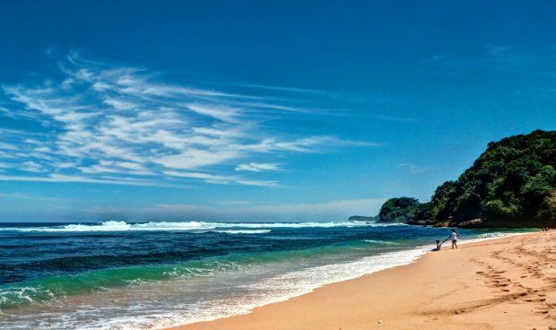

Hay guys, Bertemu lagi nih. Terimakasih loh sudah mau mampir ke website saya. Sudah merelakan waktu anda untuk berkunjung kemari. Untuk anda yang hobinya dunia maya, ini nih pas banget tempat untuk menimba ilmu. Tempat yang cocok untuk kalian. Semua informasi saya menyediakannya di sini, dan itu kusus untuk anda.

Kali ini kami ingin menulis beberapa tips fotografi di daerah pantai, termasuk pulau dan laut. Ada istilah, “santai seperti di pantai, slow seperti di pulau”. Jadi kita bikin santai aja tulisan kali ini hehe. Seperti kita ketahui bahwa setiap daerah setiap obyek fotografi selalu memiliki ciri khas tertentu, maka teknik fotografi untuk obyek-obyek tersebut juga memiliki ciri khas sendiri-sendiri agar memperoleh hasil yang maksimal, termasuk teknik fotografi di pantai.
- Kondisi Lokasi Pantai
- Komposisi Di Pantai
- Pencahayaan Emas
- Moment
- Ombak yang menggetarkan. Ombak ini kita tangkap dalam foto untuk menunjukkan kekuatannya atau keganasannya. Ombak harus terlihat detail, otot-ototnya, bulir-bulir keringatnya seakan-mengancam pantai dan batu karang. Kita bisa ambil moment ombak ini dengan kecepatan shutter tinggi sehingga ombak menjadi freeze dan detailnya terlihat. Syarat shutter speed tinggi adalah cahaya cukup atau ISO cukup tinggi.
- Ombak Kapas. Ini istilah saya pribadi saja, saya tidak begitu hapal istilah umumnya. Intinya membuat ombak menjadi lembut, selembut helai-helai kapas. Caranya waktu harus pagi sekali, saat cahaya masih sedikit. Alat wajib adalah tripod, karena prosesnya adalah mengambil foto ombak dengan shutter speed lama, jadi akan memberi efek pada ombak menjadi seperti kapas putih karena blur, sementara obyek lainnya misal langit, pasir dan batu tetap tajam.
- Filter
- Lokasi Tujuan Hunting
Lokasi pantai umumnya ya terdapat pasir, ada air laut, biasanya ini yang menjadi obyek utama POI (point of interest) dalam fotografi pantai. Terus apa lagi ? Ada langit, ada awan, perahu dan sedikit pepohonan yang biasanya adalah pohon-pohon kelapa. Tapi dengan jumlah obyek yang itu-itu saja, ternyata banyak kreatifitas yang bisa kita gali disana, karena kombinasinya menjadi tak terbatas jika kita masukkan unsur waktu. Hunting foto waktu pagi, waktu siang atau waktu sore tentu akan berbeda, juga kecepatan shutter lambat atau cepat tertentu akan menghasilkan hasil yang masing-masing unik.
Amati lokasi hunting dan temukan obyek menarik. Obyek menarik tidak harus yang wah, kadang yang sederhana justru yang paling menarik. Tentu berbeda-beda cara pandang untuk setiap orang. Yang paling gampang misalnya ambil foto pasir putih pantai, laut berombak dan langit berawan. Ini adalah kombinasi standar foto di pantai. Di frame yang lain ikutkan batu karang, dermaga panjang, kayu tua mati atau pohon kelapa. Namanya hunting foto, mata harus melek dan jeli, seperti elang menangkap mangsa.
Pantai adalah lokasi paling mudah belajar komposisi, mengapa ? Karena ada horizon laut. Sudah tahu kan aturan Rule of Third ? (kalau belum tahu baca disini). Horizon laut ini bisa kita gunakan sebagai penanda garis bawah atau garis atas dari batas-batas Rule of Third. Misalkan kita ambil komposisi 1/3 pantai, 1/3 laut dan 1/3 langit. Jika ada obyek lain misal perahu, bisa kita atur agar perahu tersebut terletak 1/3 frame dan menuju 2/3 frame lainnya sehingga foto seakan-akan bisa bercerita “perjalanan masih jauh”.
Selain itu di pantai pandangan bisa luas ke segala arah, tidak terdapat obyek-obyek yang membuat distract atau mengganggu komposisi yang akan kita ambil. Gampangnya bandingkan melakukan komposisi di pantai dengan di pasar dimana banyak obyek yang mengganggu. Tentu lebih mudah di pantai.
Nah ambil kesempatan ketika di pantai untuk memantapkan teknik komposisi. Ide lain adalah abaikan aturan Rule of Third dan langgar semua konsep komposisi dan berkreasi diluar pakem untuk melatih instinct dalam komposisi.
Ada istilah “be early or be late”. Datang pagi-pagi sekali, atau sore aja sekalian asal jangan malam hari *lol*. Karena kondisi laut yang terbuka maka cahaya Matahari juga melimpah. Sehingga kalau terlalu siang akan sangat sulit mengatur pencahayaan. Paling mantap adalah menggunakan waktu-waktu yang disebut golden hour, yaitu dari mulai Matahari terbit hingga sebelum hari terlalu siang (kira-kira sebelum jam 08.00 pagi) dan juga saat sore yaitu sekitar pukul 16.00 hingga sebelum Matahari seluruhnya tenggelam.
Pada waktu-waktu itu, cahaya Matahari lebih lembut dan dramatis, langit juga masih bergradasi dari warna biru kuning dan memerah merupakan obyek yang menggiurkan bagi fotografer landscape. Perlu diperhatikan pada kondisi ini cahaya masih sangat minim sehingga lakukan setting eksposure dan metering dengan tepat agar tidak underexpose (foto cenderung gelap). Tidak perlu takut melakukan trial and error, jika terlalu gelap naikkan bukaan aperture misal dari f/11 menjadi f/8. Atau bisa juga naikkan ISO, tapi jangan terlalu tinggi karena bisa membuat foto banyak noise. Untuk shutter speed tidak ada patokan, tergantung tujuan foto. Kita jelaskan di bagian Moment.
Bagian paling sulit belajar fotografi adalah melakukan setting eksposure secara manual mulai dari shutter speed, aperture dan ISO. Sekali lagi jangan takut untuk mencoba, trial dan error sebanyak-banyaknya tanpa perlu takut kehabisan film hehehe. Untuk metering paling aman gunakan saja evaluative, kecuali ingin mengambil foto siluet maka harus menggunakan spot metering.
Saya tidak akan mengatakan ini sebagai decisive moment karena ini bukan fotografi street. Moment yang dimaksud disini adalah kejadian yang akan kita ambil yang bisa membuat foto bercerita tanpa terlalu banyak kata. Saya ambil dua contoh moment yang sama sekali berbeda dari satu obyek yang sama. Ombak.
Moment lain yang bisa anda pikirkan adalah perahu dan matahari, burung camar dan ombak, nelayan melempar pancing, jejak pasir terhapus ombak dan lain sebagainya.
Saya pribadi terus terang jarang memakai filter. Tapi intinya disini filter berfungsi sebagai alat bantu saja. Tidak menjadi penentu foto akan menjadi lebih bagus, tetap faktor utamanya adalah kita. Filter yang digunakan antara lain ND Filter (Neutral Density) yang berfungsi untuk mengurangi banjir cahaya, cocok digunakan pada siang hari. Kemudian ada filter UV yang berguna selain untuk perlindungan lensa tetapi juga menyaring sinar ultraviolet dalam rentang tertentu. Hal ini dapat mengurangi kabut atmosfer yang sering muncul di laut, meski efeknya tidak begitukentara.
Terakhir adalah filter Polarizing (CPL), berfungsi untuk menyaring beberapa cahaya yang terpolarisasi . Intinya mengurangi refleksi dan meningkatkan kontras, biasanya efek utamanya adalah langit menjadi lebih biru, cenderung ke biru tua.
Setelah mengetahui beberapa teknik fotografi di pantai di atas, mungkin timbul niat/rencana untuk segera hunting foto di pantai. Indonesia adalah negeri ribuan pulau, tinggal pilih mau pantai model apa hehehe. Tetapi jika anda di Jakarta paling dekat, biaya murah dan kondisi masih alami bisa mencoba ke pulau seribu. Bisa mengadakan acara sendiri, atau bisa menggunakan biro jasa untuk mempermudah perjalanan seperti paketpulauseribu.com. Akhirnya sekian dulu, semoga bermanfaat, menambah ilmu dan meningkatkan skill dan kemampuan dalam bidang fotografi.
Nah, itu dia guys informasi yang bisa saya berikan kepada kalian tentang Teknik Fotografi Di Pantai dalam kesempatan kali ini. Semoga tautan ini bermanfaat bagi kalian semua. Dan yang sudah berkunjung ke Day-Dt semoga selalu di mudahkan dalam urusannya masing - masing. Oke!
Ok Guys Terimakasih atas kunjungannya ke website kami. Semoga website ini dapat membantu kalian semua dan terimakasih atas kunjungannya website ini menjadi lebih berguna lagi jika kalian tetap menjadi view kami. Jangan Pernah Bosan Untuk Berkunjung Kembali.